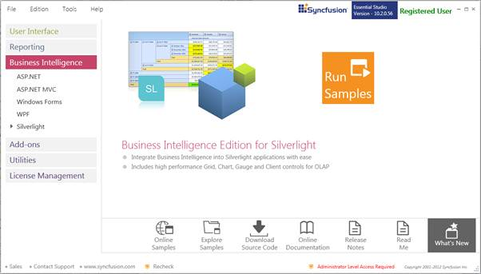
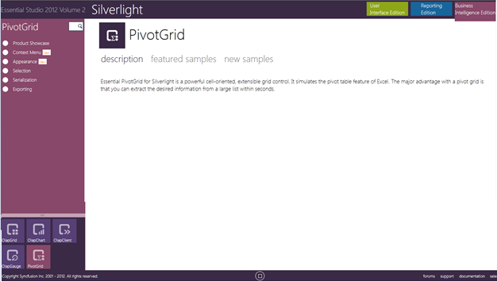

This section covers the location of the installed samples and describes the procedure to run the samples through the sample browser. It also lists the location of source code.
Sample Installation Location
The samples will be in installed in the following location:
Windows XP:
C:\Syncfusion\EssentialStudio\<version number>\BI\Silverlight\PivotGrid.SL
Windows 7/Vista:
C:\Users\<User_Name>\AppData\Local\Syncfusion\EssentialStudio\<version number>\BI\Silverlight\PivotGrid.SL
Assemblies will be installed in the following location:
[System Drive]:\Program Files\Syncfusion\Essential Studio\<version number>\Assemblies\4.0\
The PivotGrid control will be listed under the Syncfusion BI Silverlight 4.0 in VS 2010 Toolbox
Steps to run the sample
1. Click StartàAll ProgramsàSyncfusionàEssential Studio <version number> àDashboard.

Figure 2: Syncfusion DashBoard
2. On the Dashboard window, click Run Samples for Silverlight under BI Edition. The BI Silverlight Sample Browser window will be displayed.
 Note: You can view the samples in any of the
following three ways:
Note: You can view the samples in any of the
following three ways:
· Run Samples - Click to view the locally installed samples.
· Online Samples - Click to view online samples.
· Explore Samples - Explore BI Silverlight samples on the disk.

Figure 3: BI Silverlight Sample Browser
3. Select Pivot Grid. Pivot Grid samples are displayed.

Figure 4: BI Silverlight Sample Browser - PivotGrid
4. Select any sample and browse through the features.
Source Code Location
The default location of the PivotGridsource code is the following:
[System Drive]:\Program Files\Syncfusion\Essential Studio\[Version Number]\BI\PivotAnalysis..Silverlight\Src